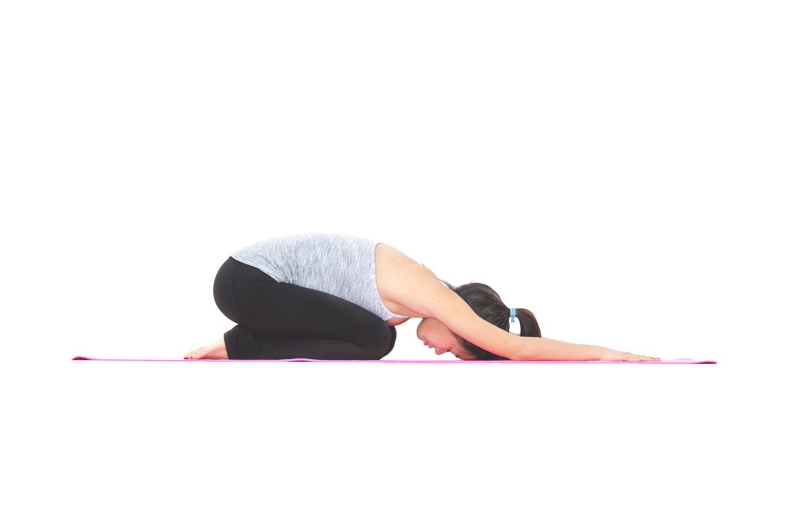

Child Pose – Balasana

The Child Pose is a resting pose useful to relieve neck, back and hip strain. While in the posture you should have slow are regulated breath; extended arms; resting hips and your forehead should be touching the mat. You can always return to this pose as at it is one of the most restorative and calming pose